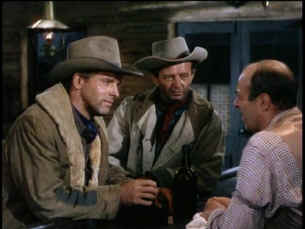
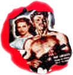

|
Vengeance
Valley/B-,C-
|
| Roan/1951/83m/FS
1.33 |
Burt
Lancaster stars as Owen Daybright, the adopted son of a wealthy
rancher, pitted against the natural son, bad seed Lee
Strobie, played by Robert Walker, in the 1951 Western, Vengeance
Valley.
Vengeance
Valley depends more on
scenery and actors chewing up scenery than on anything original
in the story. This is tried and true Western territory, enhanced
by the presence of Burt Lancaster, who is never dwarfed by the
magnificent wide open spaces of the West. Robert Walker is
expert at exploring the dark side of characters. He performs
with an ease that contrasts well with the larger style of
Lancaster.
 |
| Owen
and Lee before the set-up. @Roan |
Bad brother Walker
wants to inherit the massive ranch his father has built, but the
old man (Ray
Collins), a cripple, has other
ideas, and leans heavily on the shoulders of Lancaster, who runs
the ranch. When Walker gets a local girl pregnant, the fireworks
heat up as her big bad brothers enter the picture to defend the
family honor. Owen is
accused of the deed by the brothers and after a couple of good
fights they align themselves with Lee in a furtive attempt to
eliminate Owen.
Joann Dru
is appealing as Walker’s wife and John Ireland
is convincingly nasty as the brother defending family honor.
Collins is rather benign as Arch Strobie, owner of the vast
ranch, and one wonders how this character was able to accumulate
such rich holdings in a survival of the fittest West.
The
best thing about this transfer is the colors. Three strip
Technicolor has the potential to produce rich and vibrant images.
The color is appealing and color pulsing is limited to a few scene
changes. The big problem is that the material looks liked it was
wiped clean with excessive digital softening. The dirt and scratches
I remember from the laser disc transfer are gone, but what remains
is an totally unacceptable soft picture. It's nice to have
this better than
the run of the mill Western as an addition to the DVD catalog,
but I'd would have liked to have a clear picture. The mono sound is thin
but adequate.
|
|
Burt
Lancaster
A look at the career of a screen legend.
Click on the image for a bio sketch and many poster images.

Nicebid.com
is a well organized auction site. Movie fans can browse through
the movie section for posters and star photos.
 A
love of movies drives this small DVD production company, Synapse
Films, currently
specializing in horror and cult films. Watch for new DVD
releases of film festival independents as Synapse branches out. A
love of movies drives this small DVD production company, Synapse
Films, currently
specializing in horror and cult films. Watch for new DVD
releases of film festival independents as Synapse branches out.
 Kinoeye
Archive Kinoeye
Archive
This
is a resource of all content-rich materials on the web relating
to Central and East European cinema. The ultimate aim of the
Kinoeye Archive is to provide a near-as-damn-it definitive index
of intelligent and thoughtful English-language analysis of
Central and Eastern European cinema on the web.
 Brad
Lang continues to add more interesting to the extensive
collection at Classic
Movies.
Everything from actors and actress to your favorite directors is
linked at the site. Brad
Lang continues to add more interesting to the extensive
collection at Classic
Movies.
Everything from actors and actress to your favorite directors is
linked at the site.
 Black
DVD Online is a new site dedicated to black film
content on DVD. The commendable enterprise is hosted by
Webmaster Samuel L. McLemore, Jr. and presented in an attractive
interface. Black
DVD Online is a new site dedicated to black film
content on DVD. The commendable enterprise is hosted by
Webmaster Samuel L. McLemore, Jr. and presented in an attractive
interface.

The
Movie Poster Archive include extensive poster images from the
films of stars like Susan Hayward, Kirk Douglas, Katharine
Hepburn and many more. This month's featured star is
Kirk
Douglas.
The
Feature
Archive has articles ranging from Akira
Kurosawa to Blonde
Bimbos, The
Heistmasters and Frank
Darabont.

Click on the image above
for a "dream interview" with director John
Ford.
|